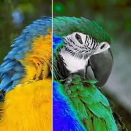

Kanaaltoewijzing (HSV)

Bouwt kleurtoon, verzadiging, waarde en alfa opnieuw op uit andere kanalen van de laag.
Instellingen
| Instelling | Type | Bereik | Standaard |
|---|---|---|---|
| H | Keuze | Kleurtoon, Verzadiging, Waarde, Alfa, Luminantie, Nul, Vol | Kleurtoon |
| S | Keuze | Kleurtoon, Verzadiging, Waarde, Alfa, Luminantie, Nul, Vol | Verzadiging |
| V | Keuze | Kleurtoon, Verzadiging, Waarde, Alfa, Luminantie, Nul, Vol | Waarde |
| A | Keuze | Kleurtoon, Verzadiging, Waarde, Alfa, Luminantie, Nul, Vol | Alfa |